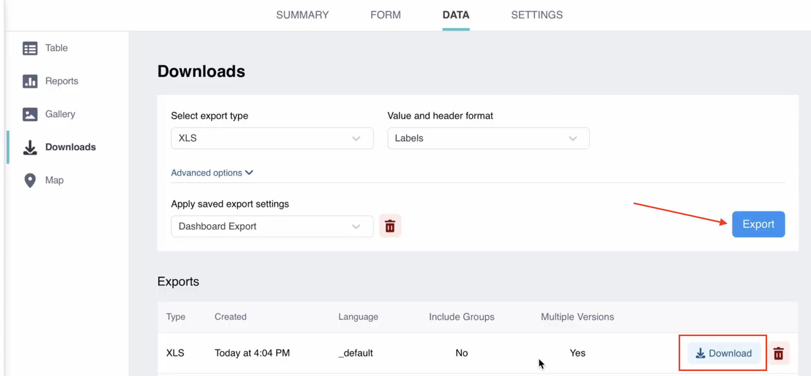

Parcourez la base de connaissances, explorez nos ressources et visitez notre Forum communautaire pour des informations plus détaillées
Dernière mise à jour : 6 mai 2026
Avec KoboToolbox, vous pouvez télécharger vos données collectées dans différents formats et personnaliser vos paramètres d’exportation. Cet article explique comment télécharger vos données collectées, avec une présentation des types d’export et des formats disponibles.
Pour télécharger vos données :
Ouvrez votre projet et accédez à DONNÉES > Téléchargements.
Choisissez vos paramètres d’exportation (décrits ci-dessous).
Cliquez sur EXPORTER. Un export sera généré et affiché dans un tableau sous les paramètres d’exportation.
Cliquez sur TÉLÉCHARGER pour télécharger le fichier exporté.

Note : La génération d'un export peut prendre de quelques secondes à plusieurs minutes, selon le nombre de soumissions, la taille du formulaire et la charge du serveur. Une fois créé, il apparaîtra dans la section Exports de la page.
Vous pouvez choisir parmi les types d’export suivants :
Type d’export |
Description |
|---|---|
XLS |
Fichier Microsoft Excel (format .xlsx). Ce format est recommandé pour l’exportation de données de groupes répétés. |
CSV |
Fichier de valeurs séparées par des virgules. Ce format est idéal pour l’importation dans la plupart des logiciels de gestion de données, y compris les bases de données. |
GeoJSON |
Format ouvert standard d’échange de données géospatiales, particulièrement adapté à l’intégration avec des logiciels SIG tels qu’ArcGIS. Ce format est recommandé pour l’analyse de données GPS. |
SPSS Labels |
Génère un fichier de syntaxe SPSS qui applique les libellés de questions et les libellés de valeurs aux variables des données KoboToolbox importées dans SPSS. |
GPS Coordinates (KML) |
Génère un fichier KML pour utiliser vos données dans des logiciels SIG tels que Google Earth. Ce format d’export ne sera plus disponible à l’avenir. Nous recommandons d’utiliser l’un des autres types d’export disponibles. |
Media Attachments (ZIP) |
Télécharge un fichier ZIP contenant tous les fichiers média collectés via le formulaire. |
XLS (legacy) |
Génère un fichier .xlsx (Microsoft Excel) via une interface KoboToolbox ancienne version. N’utilisez cette option qu’en cas de problèmes occasionnels avec les exports XLS et CSV standard, car elle sera supprimée dans une prochaine mise à jour. |
CSV (legacy) |
Génère un fichier CSV via une interface KoboToolbox ancienne version. N’utilisez cette option qu’en cas de problèmes occasionnels avec les exports XLS et CSV standard, car elle sera supprimée dans une prochaine mise à jour. |
Pour en savoir plus sur les types d'export, consultez les articles Cartographier vos données GPS et Gérer les réponses média soumises par les répondants.
Lorsque vous utilisez les formats d’export standard (XLS, CSV, GeoJSON et SPSS Labels), vous pouvez sélectionner le format des valeurs et des en-têtes de vos données :
Format |
Description |
|---|---|
Labels (default) |
Le fichier exporté utilise les libellés de questions (texte de la question) comme en-têtes de colonnes et les libellés de choix pour les réponses aux questions de type Choix unique et Choix multiple. |
XML values and headers |
Le fichier exporté utilise les noms des questions (noms des champs) comme en-têtes de colonnes et les noms des choix (valeurs XML) pour les réponses. Ce paramètre d’exportation est recommandé pour l’importation de vos données dans des logiciels d’analyse de données. |
Labels in any of the defined languages |
Le fichier exporté utilise les libellés de questions et de choix dans l’une des langues définies dans le formulaire. |
En plus de la personnalisation des formats de valeurs et d’en-têtes, les formats d’export non-legacy proposent également d’autres options de personnalisation dans la section Options avancées. Pour plus d’informations sur les options avancées, consultez l’article Options avancées pour l’export des données.
La durée d’un export dépend du nombre de soumissions, de la complexité du formulaire et de la charge actuelle du serveur. Si des exports restent en attente pendant une période prolongée :
Supprimez les exports bloqués en cliquant sur l’icône corbeille.
Relancez l’export en cliquant à nouveau sur le bouton EXPORTER.
Évitez de créer plusieurs exports rapidement, car cela peut surcharger le serveur et réduire les performances pour tous les utilisateurs.
Note : Les exports expirent et s'affichent comme en échec après 30 minutes. Cette limite au niveau du serveur peut nécessiter de filtrer le nombre de soumissions incluses dans l'export afin de terminer dans le délai imparti. Un exemple de procédure est présenté dans le Forum communautaire.
Si vous continuez à rencontrer des problèmes lors de l’exportation de vos données, publiez un message dans le Forum communautaire.
_id, _uuid, _submission_time, _submitted_by et rootUuid.
_validation_status : indique le statut de validation de la soumission. Ce champ permet de suivre si une soumission a été examinée et si elle est prête à être utilisée. Les valeurs possibles sont Approuvé, Non approuvé et En attente._index : numéro de ligne séquentiel généré au moment de l'export. Il est principalement utilisé pour relier les lignes entre l'onglet principal et les onglets de groupes répétés dans les exports multi-onglets. Étant donné qu'il est créé lors de l'export, il ne doit pas être utilisé comme identifiant stable d'une soumission.
_status : indique comment la soumission a été envoyée. Dans de nombreux exports, ce champ n'est pas très utile car il peut contenir la même valeur pour tous les enregistrements.
_notes et _tags dans certains exports. Ces champs sont obsolètes mais peuvent encore apparaître dans des workflows d'export anciens ou existants.
Si vous n’avez pas besoin de ces colonnes pour votre analyse, vous pouvez les supprimer du fichier exporté après le téléchargement ou lors de la configuration des paramètres d’exportation.
Avez-vous trouvé ce que vous cherchiez ? La traduction était-elle claire ? Manquait-il quelque chose ?
Partagez vos commentaires pour nous aider à améliorer cet article !
KoboToolbox est maintenu par Kobo Inc.